Bay Area Bash 2010
Santa Cruz Beach Boardwalk Six Flags Discovory Kingdom California's Great America
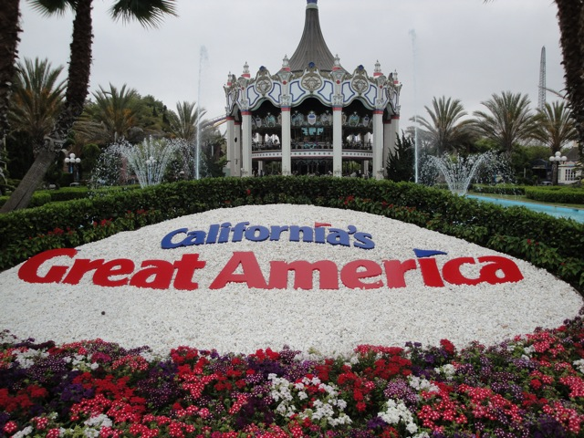
The final park on the trip, was California's Great America.
First up, Vortex ERT.
 While Vortex was running better today than it was in 2006, I still remains my least favorite B&M Stand Up.
While Vortex was running better today than it was in 2006, I still remains my least favorite B&M Stand Up.
"Dude! Shut the f*ck up! This ride is awesome!!"
 Thats enough Vortex for one day. Let's get to the good B&M in the park.
Thats enough Vortex for one day. Let's get to the good B&M in the park.
 Yep. Top Gun is still kicking ass in 2010.
Yep. Top Gun is still kicking ass in 2010.
And let's not forget about Drop Zone.
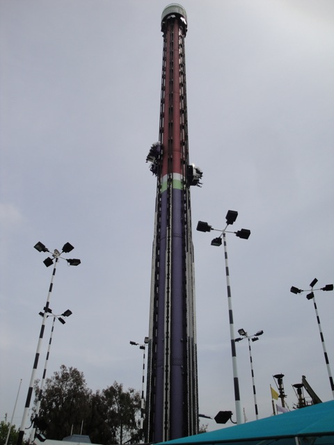
While it was still awesome, It didn't seem as awesome as I remember it back in 2006. (I'm probably just spoiled by Kings Island's Drop Zone.)
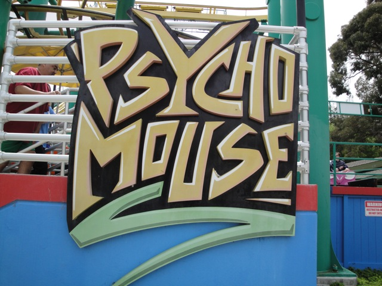
Aww. ERT is over. But luckily, the park was empty today so we could have as many rides as you wanted on anything. Like Psyco Mouse for example.
The more I ride the Arrow Mice, the more Ilike them.
Those banked turns are still pretty fun, and the drops have some really good airtime.
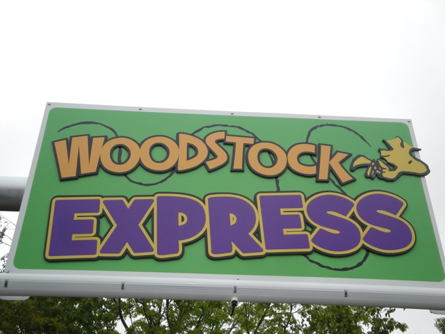
Another new credit for me.
This is a very bizzare kiddy coaster. It's pretty big on the kiddy coaster scale, but the ride doesn't really seem to do much. And Cody and I spent about 10 minutes trying to squeeze into the seats.
I finally got on a Breakdance. It wasn't that good.
While Delarium is a good frisbee and all, it's just not that great after riding Tasmanian Devil yesterday.
I HATE these ypes of rides. I managed to give myself some room to avoid my nuts from becoming squashed, but then it just began to hurt my stupid chest. This contraption came straight from hell.
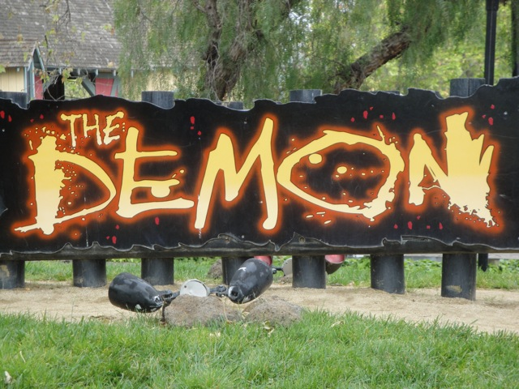
Speaking of hell.
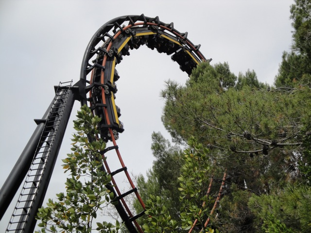
The good news for CA Demon is that they took out the heavy trims in the tunnel so now it has some speed during the 2nd half. =) Chicago Demon is still better though.
 Time for a real crappy ride.
Time for a real crappy ride.
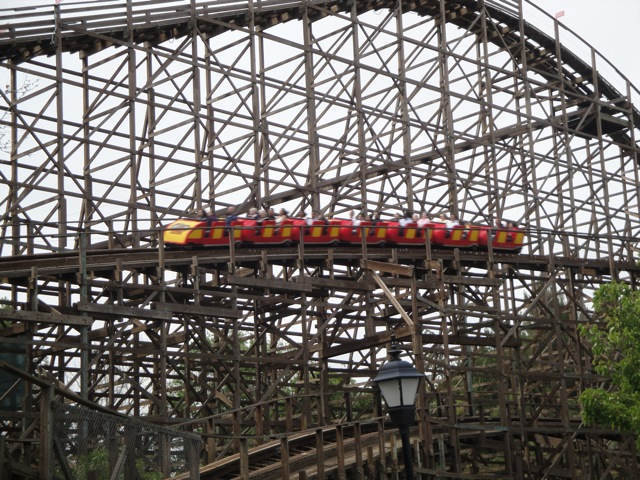
While it's not the worst coaster in the world (That award currently goes to Wild Beast), this is a real peice of sh*t.
 Do you know someone suffering from Insomnia? Take them to California's Great America and have them ride Grizzly. By the time the train gets back to the station, they'll be sleeping like a baby.
Do you know someone suffering from Insomnia? Take them to California's Great America and have them ride Grizzly. By the time the train gets back to the station, they'll be sleeping like a baby.
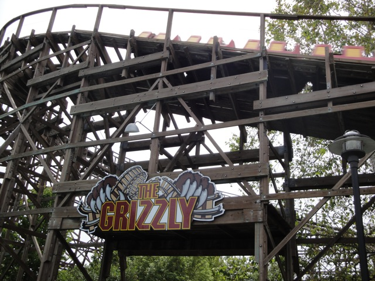
Grizzly. Destroying the sleeping pill industry since 1986.
 Let's go run over to Invertigo.
Let's go run over to Invertigo.
Ahh Dammit!!!!
 Well, the good news is that Invertigo should be testing next week. So at least I know that CGA won't pull a Two-Face.
Well, the good news is that Invertigo should be testing next week. So at least I know that CGA won't pull a Two-Face.
 We then went to lunch, where our picnic area had some really awesome Top Gun angles.
We then went to lunch, where our picnic area had some really awesome Top Gun angles.
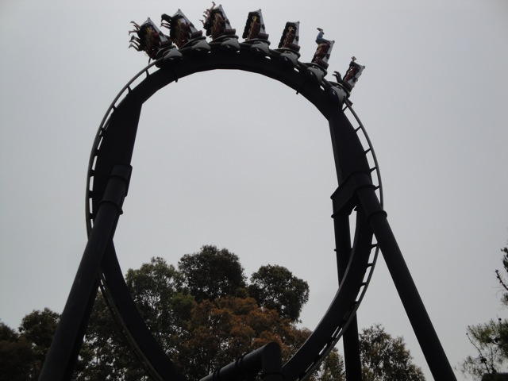
Top Gun Loopiness.
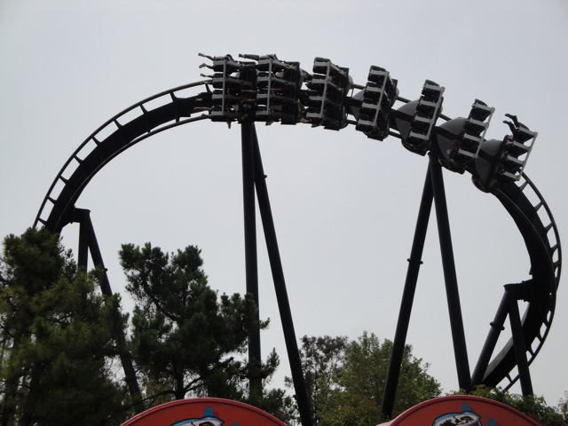
This banked turn on Top Gun is awesome. Why can't more B&M Inverts have more elements like it?
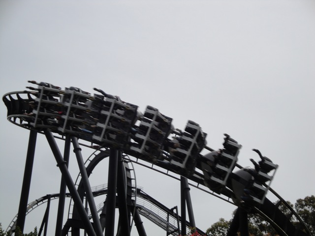
Top Gun Goodness.
Smile. You're now on Incrediblecoasters.
 More Top Gun Goodness.
More Top Gun Goodness.
During the trivia, I won and got an Invertigo Wheel. As you can see, it is now a part of my collection of various things.
And now begins our awesome backstage tour. (As you could tell, many of the earlier pictures were from backstage tours.)
Backstage Vortex.
 Stop mocking me!!!
Stop mocking me!!!
Hey Arnold! Get out of here! This is a Cedar Fair Park!!
Backstage Tour Awesomeness.
This backstage tour took us to a lot of cool places.
Here, they showed us Nickelodeon Jail. The place where they lock up all the Nickelodeon Characters who show their faces at Cedar Fair Parks. (Hey Darwin, Cheer up. Soon, Arnold will be here to keep you company.)
Why are there fangs on that pig?
This Demon train has been very naughty and has been running badly. So we are taking him to rehab where we will fix him up for good.
Don't move a muscle. If you don't move, the Psyco Mouse can't see you.
Nope. Cedar Fair changed that.
Hey Angry Beaver! Don't think that running across the Compressed Air pipe will keep you out of Nickelodeon Jail.
 And now for the grand finale, Backstage Top Gun Photos!
And now for the grand finale, Backstage Top Gun Photos!
 I think I heard from one of the ride operators that if you manage to drink the water in the pond, you'll be teleported onto Maverick.
I think I heard from one of the ride operators that if you manage to drink the water in the pond, you'll be teleported onto Maverick.
 Backstage Top Gun is awesome! =)
Backstage Top Gun is awesome! =)
 After our backstage tour, I decided to take one final ride on Top Gun.
After our backstage tour, I decided to take one final ride on Top Gun.
And now, it's all unfortunetly over. This was a fantastic weekend. I am really glad I got to see the Bay Area Parks again and am looking foreward to returning to every single one of them.
Home